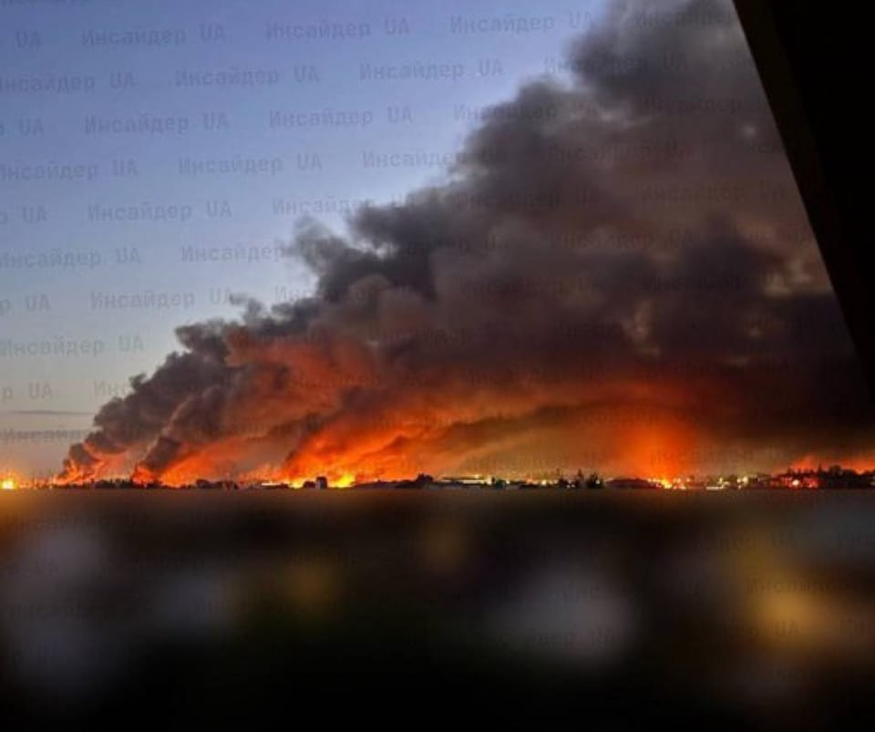

世界苦茶07月04日新闻 | 37条 | 美众议院通过税收法案

美众议院通过税收法案 | 印度称达赖转世问题仅能由他自己决定 | 朝鲜继续向俄罗斯派兵 | 中国向欧盟表示无法承受俄罗斯失败 | 上海外卖启动类健康码措施
今日三条新闻分析
苦茶数据
美元兑人民币：7.16（昨日7.16，前日7.16）
美元兑日元：144.71（昨日143.87，前日143.53）
上证指数：3458（昨日3461，前日3456）
标普500指数：6279（昨日6227，前日6198）
比特币：109383（昨日109285，前日106278）
布伦特原油：68.60（昨日67.15，前日66.44）
中国新闻
• 上海外卖骑手启用交通码 ：上海公安交管部门建设完善了“快递外卖行业非机动车交通安全管理信息系统”，将全市快递外卖骑手、车辆、企业及相关交通违法、事故等数据，全量汇聚至“系统”并进行逻辑关联和模型开发。上海已推出外卖骑手“交通安全码”，以“绿、黄、红”三色作为安全等级标识，并直接关联从业资格——新入职骑手必须“绿码”才能从业，屡教不改的“红码”骑手，会被列入行业“禁限名单”，责令所属平台企业“停单”。此外，对配送站点，系统实行1至5星的动态星级评定；对平台企业，实行“高风险”“低风险”两个风险等级的评定。针对骑手因赶单而违法的情形，上海同样明确，配送站点的业务考核与安全等级关联挂钩，企业对站点的业务考核等级不得高于安全等级。 （翻评：绿码PTSD，健康码治理思路阴魂不散。）
• 大湾区航空停飞日本 ：“日本将有大地震”传言对客流产生影响，大湾区航空9月起将暂停飞往日本米子和德岛的航班。据日本共同社报道，大湾区航空星期三称，9月1日起，连接香港和日本米子、德岛的国际定期航班将全部暂停。对于航线暂停，德岛县知事后藤田正纯称：“对没有科学根据的谣言造成形象受损导致停运感到遗憾。关于重启运航，将视需求恢复情况进行磋商。”鸟取县知事平井伸治表示“不得不接受这一事实”。
• 中国海警钓鱼岛巡航 ：中国海警公布，海警舰艇编队星期四在钓鱼岛，日本称尖阁诸岛附近巡航。中国海警在微博上说，1306舰艇编队“在我钓鱼岛领海内巡航。这是中国海警依法开展的维权巡航活动。”根据中国海警微博记录，中国海警曾公布，海警舰艇编队6月6日在钓鱼岛附近巡航。
• 解放军黄岩岛战备巡逻 ：中国军方公布，星期四在黄岩岛，菲律宾称斯卡伯勒浅滩附近组织战备警巡。中国人民解放军南部战区在微博通报，南部战区组织海空兵力，在“中国黄岩岛领海领空及周边区域开展战备警巡”。根据南部战区微博记录，南部战区上一次在该地区战备警巡是在5月31日。 （翻评：四面出击。）
• 山东舰访问香港展可靠性 ：中国山东舰航母编队抵达香港，军事专家称，航母刚结束军演就访港，说明装备可靠。据中国央视新闻报道，中国军事专家曹卫东说：“在高强度演习训练后，山东舰就来访问香港，说明装备很可靠。因为没有通过演习高强度使用后，就进厂维修或保养，而是马上可以展示。”辽宁舰、山东舰航母编队上个月赴西太平洋等海域开展训练，检验部队远海防卫和联合作战能力。
• 华东高温突破40度 ：今年以来最强高温过程正在影响中国，中东部地区最高气温37℃以上的范围将进一步扩大，局部地区日最高气温超过40℃。据中新社报道，随着副热带高压持续控制黄淮、江淮、江南、江汉、华南等地，中国中央气象台预计，星期四至星期六，中东部地区有大范围持续性高温天气，部分地区最高气温37℃至39℃，局地将超过40℃。
• 渤海联合执法三天启动 ：中国从星期三起在渤海展开为期三天的联合巡航执法行动，执法船艇在行动中对重点船舶进行联合登轮检查。据中国央视新闻报道，由天津、辽宁、河北、山东四地海事部门携手航保、海警、海监、渔政等单位组成联合编队，在当天共同启动“海安2025”渤海海域联合巡航执法行动。在联合巡航执法行动中，六艘执法船艇组成联合编队，利用卫星遥感、船舶交通服务系统、船舶自动识别系统等先进的技术手段，重点巡航了莱州湾、渤海湾等船舶交通流密集区域以及商渔船碰撞风险易发水域，行动重点关注并排查了渤海海域旅游旺季涉海活动密集水域的通航安全状况，并对重点船舶实施了联合登轮检查。
• 港立会辩同性伴侣登记草案 ：香港立法会7月3日听取政制局长曾国卫就《同性伴侣关系登记条例》草案框架作说明。案件原告岑子杰昨晚表示，结婚和离婚都要先海外再香港，过程曲节繁复；同时框架未涵盖在囚人士的伴侣探视权；希望通同志团体举行咨询会。曾国卫当日回应说：如果不将“已在海外注册为伴侣”作为在港登记的前提要求，就需要对登记者实施会面会谈等查核程序，或涉及检视私人材料，这对当事人是更大的滋扰与不便。两害相较取其轻，奉劝有关人士深思熟虑，勿说“不切实际甚至为同行人士带来不良或不利影响的言论”。该法案引起建制派议员激烈反对。梁美芬、何君尧等人称“这是对维护传统家庭价值黑暗的一天”，认为应举行公听会、应向全国人大申请释法，要求政府向终审法院申请延期立法。
• 中国育儿补贴实施细则公布 ：中办国办6月19日印发《育儿补贴制度实施方案》（厅字〔2025〕15号）。补贴的国家基础标准为每孩每年3600元，发至3周岁，限合法生育，不区分一二孩。2025年1月时已出生不满3岁的婴幼儿按月折算计发。对应所需资金由中央财政补助，东中西部地区比例分别为85%、90%、95%。各省自行制定实施方案，可自行提标，资金自筹。市级行政区域范围内政策标准应划一。各地此前已出台的育儿补贴政策，应评估明确衔接安排。财力薄弱地区拟出台提标的，要严加控制，其已出台的育儿补贴政策，如超出国家基准，应逐步平稳改为一致；加强管理指导，不得将相关支出责任上移。 （翻评：此前呼和浩特的标准为每年1万发到5岁。）
亚太印太新闻
• 国民党推反罢免扑克牌 ：台湾在野党国民党推出“反罢免扑克牌”，整理并印制民进党政治人物过往争议性发言，作为反制罢免行动的宣传工具。综合台湾《上报》《联合报》报道，国民党立法院党团星期四召开记者会，发表自制的“反恶罢护台湾扑克牌”，卡牌内容收录多名民进党人士的争议言论，共有54张。两张鬼牌分别印有总统赖清德过去批评预算删减、比喻“国家成了一台无油可动的车”的说法，以及民进党立法院党团总召柯建铭在花莲地震后称“老天有眼发生地震，老天要救台湾民主”的言论。
• 台湾拟推军人升等商务舱 ：在台湾官方宣布让军人优先登机后，总统赖清德加码提出，允许军人优先升等商务舱。中华航空对此回应称，正研议相关细节。台湾交通部民用航空局6月6日在官网发布新闻稿，交通部长陈世凯与国防部长顾立雄当天联袂出席记者会，宣布包括华航在内的六家台籍航空公司国际线航班将从7月起同步推出军人优先登机服务。
• 台选委会限罢免民调发布 ：台湾中央选举委员会公告，针对24名立委和新竹市长高虹安的罢免案，本月16日起至投票时间截止前，不得发布或评论罢免民调。综合台湾《联合报》和三立新闻网报道，中选会星期四公布，政党及任何人自投票日前10天起至投票时间截止前，不得以任何方式发布、报道、散布、评论或引述罢免民意调查及其他各式具民意调查外观的资料。以此计算，上述禁令将从本月16日起生效。
• 赖清德动员支持环岛罢免 ：台湾总统兼民进党主席赖清德下达动员令，呼吁全体党公职人员全力支持由罢免公民团体发起的环绕台湾一周活动。综合《联合报》《自由时报》报道，公民罢免团体“反共护台志工联盟”将于星期五启动为期16天的“护国大绕境”活动，联同31个罢免团体从花莲出发，沿台湾顺时针方向绕行一圈，预计7月19日抵达台北立法院前的青岛东路。赖清德星期三在民进党中常会上呼吁全体党公职人员以实际行动声援“护国大绕境”活动。
• 检察官照片被恶意传播 ：台湾网络上流传一张侦办京华城弊案的检察官团队合成照片，不仅公开检察官姓名与照片，还附上“命债，命还”等仇恨字句。对此，台湾法务部严正谴责，并指示台北地检署与警方尽速侦办。台北地方法院原定星期二召开京华城案的程序准备庭，拟调阅前台北市副市长彭振声的侦讯录音。但就在开庭前，彭振声接获家属来电，得知妻子在高雄住处坠楼身亡，引发社会震惊。有网民星期三在社交平台Threads上传一张合成图，公开参与侦办京华城案的台北地检署检察官团队的姓名与肖像，画面还经后制添加血痕，并附有“命债、命还”等文字。
• 缅甸反对东帝汶入亚细安 ：缅甸指东帝汶违反亚细安宪章有关不干涉内政的原则，因此反对东帝汶加入亚细安。东帝汶原定于今年10月正式加入，如今可能生变。泰国公共广播公司星期三引述消息人士报道，缅甸军政府近期致函现任亚细安轮值主席国马来西亚表明立场，称东帝汶未遵循《亚细安宪章》中关于不干涉内政的原则。这封信函由亚细安—缅甸事务总干事兼高级官员会议代表汉温昂签署，指如果东帝汶继续公然违反原则，缅甸将拒绝东帝汶加入亚细安。
• 印度回应中国，达赖喇嘛继承人只能由他本人决定： 尽管中国坚持达赖喇嘛的下一任转世必须遵循北京的法律，但西藏精神领袖的办公室强调，唯有“甘丹颇章基金会”拥有决定继任者的权力。印度少数族裔事务部长基伦·里吉朱表示：“达赖喇嘛的位置极其重要，不仅对藏人，对全球所有追随者而言都意义重大。他的继承人只能由他本人决定。”
科技新闻
• 腾讯网易限未成年游戏 ：中国两科技企业腾讯和网易发布通知，在暑期对未成年人限制玩游戏时间不超过27小时。腾讯星期四在官方微信公众号上发布，2025年腾讯游戏暑期未成年人限玩日历，即从7月1日至8月31日，每个星期五至星期日晚上8时至9时之间未成年人可登录游戏，其余时间均为禁玩时段。整个假期总计时长不超过27小时。在防沉迷方面，腾讯表示，给家长推出了全套游戏账号管理工具，专治“不停玩”“偷偷玩”。
• ChatGPT写作影响学生思维 ：美国麻省理工学院近期研究发现，利用ChatGPT来写文章的学生缺乏创意和批判性思维。在研究中，54名成人学生分为三组，须在20分钟内写一篇文章。第一组借助人工智能软件ChatGPT，第二组可以利用搜索引擎查找资料，第三组什么工具都没有，只能动脑筋完成文章。研究员通过脑电图观察三组学生的大脑活动，结果发现使用ChatGPT的学生在各层面上的表现远远不如只能动脑写作的学生，脑电图显示前者大脑活动较弱，大脑不同区域之间的连接较少。
• 欧洲巨头联名反对AI法案 ：空客和法国巴黎银行等多家欧洲大型企业的首席执行官呼吁欧盟叫停其具有里程碑意义的《人工智能法案》，目前欧盟正考虑削弱该法案若干关键条款，该法案原定于今年八月生效。据公开信，来自欧洲大陆44家大型企业的负责人呼吁欧盟委员会主席冯德莱恩暂停该法案两年，警告称，不明确且相互重叠的监管规定正威胁欧盟在全球人工智能竞赛中的竞争力。公开信指出，欧盟复杂的监管规则，正将欧洲的人工智能雄心置于风险之中，不仅危及欧洲本土领军企业的发展，也削弱各行业按全球竞争所需规模部署AI的能力。联署人还包括法国零售商家乐福和荷兰医疗集团飞利浦的负责人。
财经新闻
• iPhone中国销量两年来首升 ：研究机构Counterpoint Research表示，今年第二季度，苹果iPhone在中国的销量实现两年来首次增长，这家科技巨头正寻求扭转其最关键市场之一的业务。根据数据，截至六月底的三个月里，iPhone在中国的销量同比增长 8%。这是自 2023年第二季度以来，苹果首次在中国实现增长。苹果五月份业绩因促销活动而提升，当时中国电商企业对苹果最新款 iPhone 16 机型进行了打折销售。这家科技巨头还提高了部分iPhone的以旧换新价格。据悉，华为第二季度的销量同比增长了12%。该公司是第二季度中国市场份额最大的厂商，其次是Vivo，苹果则位居第三。
• 特斯拉上海交付量回升 ：美国电动车巨头特斯拉在中国的生产设施——上海超级工厂6月份交付量九个月来首次实现同比增长。中国全国乘用车市场信息联席分会星期三公布，特斯拉上海工厂6月交付7万1599辆汽车，同比增长0.8%，环比增长16%。这是该工厂九个月以来首次实现同比正增长。彭博社指出，尽管增长幅度有限，但这可能预示特斯拉在中国市场迎来拐点。作为特斯拉全球最关键的生产基地之一，上海工厂不仅支撑中国本地市场，更是对欧洲出口的核心。
• 中方反对美越以中为筹码 ：针对美国与越南达成的贸易协议，可能对经越南转运的中国产品征收高达40%关税，中国商务部表态坚决反对以牺牲中方利益为手段达成交易，将坚决予以反制，维护自身正当权益。据日月谭天微博消息，中国商务部新闻发言人何咏前星期四针对美越贸易协议应询时说，中国已注意到相关情况，正在开展评估。何咏前说，中国的立场是一贯的，中国乐见各方通过平等磋商解决与美方经贸分歧，但坚决反对任何一方以牺牲中国利益为手段达成交易。如果出现这样的情况，中国将坚决予以反制，维护自身正当权益。
• 欧莱雅否认裁员九成 ：针对有报道指欧莱雅集团将在香港裁员的比例高达90%，欧莱雅中国回应称，有关消息失实，集团正构建新的运营模式。据《新京报》报道，欧莱雅中国星期三应询时说，有关欧莱雅香港的传闻信息失实，并表示为充分应对日渐融合的区域市场生态和不断变化的消费模式，集团正转型并构建全新的运营模式，推动香港和中国大陆组织架构间更强的协同效应和互利共赢。欧莱雅中国称，新架构将结合两个市场的优势，包括香港在零售领域的经验和中国大陆在数字和电商领域的实力，以期能更好地服务两个市场，尤其是大湾区消费者。
• 欧盟促中国取消稀土限制 ：中欧高级别战略对话当地时间星期三在布鲁塞尔举行，欧洲联盟在对话中敦促中国结束稀土出口限制。据路透社报道，欧盟外交与安全政策高级代表卡拉斯当天在布鲁塞尔同中共中央政治局委员、中国外交部长王毅举行第十三轮中欧高级别战略对话。卡拉斯会后在欧盟发布的声明中作出以上表述，并警告称中国企业如果继续支持俄乌战争，将给欧洲安全带来严重威胁。
• 金砖国家将设立担保基金以促进成员国投资 ：两位知情人士对路透表示，金砖国家即将宣布成立由新开发银行支持的新担保基金，以降低融资成本并促进投资。知情人士称，该倡议以世界银行的多边投资担保机构为蓝本，在美国经济政策不确定性的情况下，旨在应对全球投资转移。
• 美国解除许可证暂停令，允许GE向中国商飞出售喷气发动机 ：据一位熟悉情况的消息人士透露，美国商务部周四通知GE航空航天，再次允许该公司向中国商飞运送喷气发动机，取消了几周前发布的许可证暂停令。GE和美国商务部均未回复置评请求。中国驻美国大使馆的发言人没有立即回应置评请求。
俄乌战争
• 朝鲜向俄罗斯输送1.4万名士兵和900万发炮弹，震惊世界的战争合作关系浮出水面： 朝鲜与俄罗斯的军事合作急剧升级，仅一年内就向俄方提供了超过1.4万名士兵和900万发炮弹。这一令人震惊的发展引发了对地区稳定与国际安全的严重担忧。金正恩试图借此动摇对朝制裁并实现军事现代化。根据美国国会官网 Congress.gov 的报告，金正恩的合作动机有两个：第一是削弱限制朝鲜经济发展的国际制裁；通过与一贯无视国际准则的俄罗斯结盟，金正恩希望获得关键的军事技术与外汇资源。第二是借助此次合作机会，推动朝鲜长期被忽视的常规军力现代化，而过去这一领域被其核计划所压制。
• 俄副总司令战死乌克兰前线 ：俄罗斯海军副总司令米哈伊尔·古德科夫7月2日在库尔斯克州的战斗中被乌军击毙。根据非官方的俄乌军事Telegram频道稍早前报道，古德科夫和其他10名军人在该州科列涅沃的一个指挥所的袭击中死亡。他是2022年2月以来俄军阵亡的最高级别将领之一。
• 特朗普在与普京通话后表示，停战努力毫无进展 ：美国总统特朗普表示，当天早些时候与俄罗斯总统普京的通话在结束乌克兰战争方面没有取得任何进展，而克里姆林宫的一名助手则表示，俄罗斯总统重申莫斯科将继续推动解决冲突的 "根缘"。根据普京助手乌沙科夫提供的一份读稿，在近一个小时的会谈中，两位领导人没有讨论美国最近暂停向基辅运送武器的问题。
• 德国希望与美国达成协议，为乌克兰提供爱国者系统： 德国《图片报》报道称，柏林正在等待美国国防部长皮特·赫格塞斯确认，是否同意提供两套爱国者防空系统，由德国出资支援乌克兰。该请求数周前已提交。《图片报》称：“此前基辅曾试图直接向美国购买爱国者系统未果，随后转而寻求德国帮助。”随着美国宣布暂停部分对乌武器交付，德国担心美国可能也会拒绝其援助请求。报道指出，该议题在本周三德国内阁会议上被讨论，“明确得出结论是美国取消的供货无法替代”。尽管如此，《图片报》补充称，德国与其他盟国仍希望尝试从本国库存中向乌克兰提供至少两套爱国者系统。
• 中方对欧盟表态，北京无法承受俄罗斯在乌克兰战败： 据《南华早报》报道，中国外长王毅于7月3日对欧盟高级外交官卡娅·卡拉斯表示，中国无法承受俄罗斯在乌克兰战败的后果。报道称，王毅的言论反映出一个战略考量：如果俄罗斯败北，美国的注意力可能会转向中国，而此时北京正积极为可能的对台行动做准备。乌克兰战争愈发拖延之际，这场冲突对中国战略而言反而具有一定“缓冲”作用。中国一直是俄罗斯全面战争期间的关键盟友，不仅帮助莫斯科规避西方制裁，还成为提供军民两用物资以支撑俄国防工业的最大来源。
国际新闻
• 伊朗再关闭西中部领空 ：伊朗宣布，伊朗西部和中部领空将对所有航班关闭。这距离伊朗允许国际过境航班使用西部和中部领空刚过去四天。伊朗迈赫尔通讯社引述道路和城市发展部发言人马吉德·阿哈万星期三发布的消息说，伊朗民用航空组织一个协调委员会在对安保和安全问题进行评估后作出这一决定。新华社引述迈赫尔通讯社的报道说，包括位于首都德黑兰的梅赫拉巴德机场、伊玛目霍梅尼国际机场在内，伊朗南部和北部的机场将继续关闭。而上月25日重新开放的伊朗东部空域不受影响，将继续允许国际过境航班以及从伊朗东部机场起降的国内外航班通航。
• 美称打击令伊朗核计划拖延 ：美国国防部指出，美国10天前的打击令伊朗核计划的步伐拖慢达两年，这表明美国的军事行动很可能已经实现了目标。五角大楼发言人肖恩·帕内尔星期三在记者会上提供了这一数字，并补充说官方估计“可能更接近两年”。帕内尔说，至少国防部内部的情报评估是这么认为的，他没有提供证据支持他的评估。6月22日，美国军方轰炸机对伊朗的三处核设施进行了打击，使用了十几枚3万磅的掩体炸弹和20多枚“战斧”巡航导弹。
• 法国空管罢工航班取消 ：法国空中交通管制员星期四起进行为期两天的罢工，以要求改善工作条件，导致夏季高峰的多个航班被迫取消。路透社报道，法国民航局已经要求各航空公司减少出入境法国的航班数量，包括巴黎夏尔·戴高乐机场，以应对这次罢工带来的影响。法国航空表明，已调整其航班计划，但未透露具体细节，称其长途航班将照常运行。
• 特朗普考虑鲍威尔继任 ：美国总统特朗普及其顾问开始考虑美国联邦储备局主席鲍威尔的继任人选之际，一道难题横亘于前：鲍威尔明年是否会彻底离开美联储。鲍威尔一再拒绝透露他是否会在明年5月份、四年美联储主席任期届满时卸任，也未说明是否会继续留在美联储理事会。根据规定，他可以继续留在理事会，直到2028年1月作为理事的任期届满。鉴于鲍威尔会继续留在美联储的可能性，政府官员开始为他的继任者规划多种方案。特朗普希望物色到一位支持他经济议程的美联储主席。特朗普星期二说，他已有“两三位”首选人选来接替鲍威尔，但拒绝透露是谁。
• 美众议院通过税收法案 ：美国众议院7月3日以218票赞成，214票反对，通过了特朗普力推的“大而美”税收与支出法案。两名共和党议员加入了民主党投下反对票。预计特朗普将在明天签署该法案。
• 马里兰男子被误遣萨尔瓦多后遭酷刑与虐待： 马里兰州男子基尔玛尔·阿布雷戈·加西亚被错误驱逐至萨尔瓦多，并关押在该国最臭名昭著的监狱之一，遭遇“严重殴打”与“酷刑”，新出炉的法庭文件披露。他的律师称，抵达“恐怖主义监禁中心”后不到一天，狱警的暴力已造成明显伤痕。特朗普政府曾指控阿布雷戈·加西亚是MS-13帮派成员，但他的律师及家属强烈否认。尽管最初官方称他永不得返美，但今年6月他被引渡至田纳西州，面临人口贩运指控，目前已表示不认罪。其妻子起诉特朗普政府的新诉讼材料指出，阿布雷戈·加西亚与其他20名在押人员在抵达CECOT后反复被殴打。